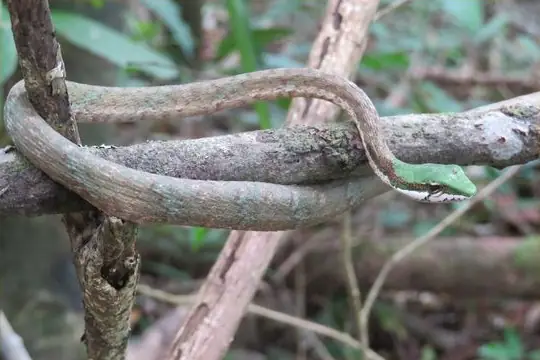
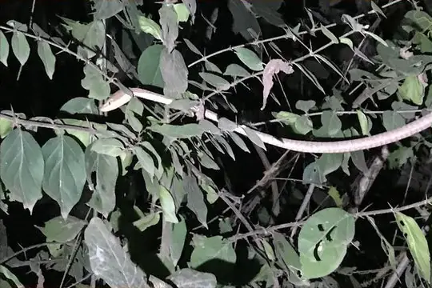

Thelotornis
The genus Thelotornis (family Colubridae) has 4 species in SnakeList (all venomous), recorded in 30 countries.
- 4species
- 4venomous
- 30countries
About the genus
A genus of the family Colubridae (colubrids).
Species
Showing 4 species

Eastern Vine SnakeThelotornis mossambicanus Kirtland's Twig SnakeThelotornis kirtlandii
Kirtland's Twig SnakeThelotornis kirtlandii Twig SnakeThelotornis capensis
Twig SnakeThelotornis capensis
Usambara Vine SnakeThelotornis usambaricus
No snakes in Thelotornis match.
About the genus Thelotornis
- Family: Colubridae.
- Recorded in: Angola, Benin, Botswana, Cameroon, Central African Republic, Democratic Republic of the Congo, Equatorial Guinea, Eswatini, Gabon, Ghana, Guinea, Guinea-Bissau, Ivory Coast, Kenya, Liberia, Malawi, Mozambique, Namibia, Nigeria, Republic of the Congo, Sierra Leone, Somalia, South Africa, South Sudan, Sudan, Tanzania, Togo, Uganda, Zambia, Zimbabwe.